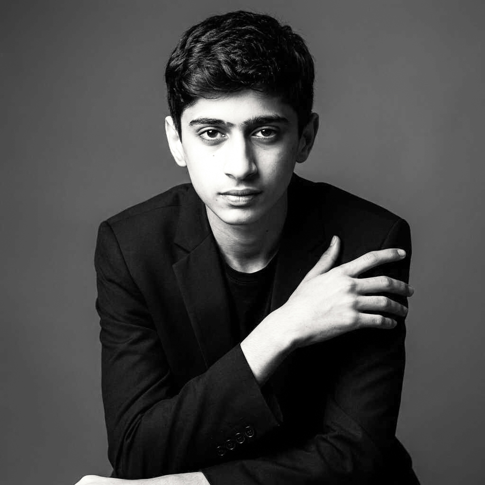

ANIMATION / 01
نغمهٔ فراموششدهٔ سپیدار
توسعه بصری، طراحی شخصیت و روایت در یک دنیای داستانی.
مطالعه پروژه↗
انیماتور دوبعدی · هنرمند بصری
من آرشیا نوریان هستم؛ هنرمندی علاقهمند به انیمیشن دوبعدی، طراحی و روایت تصویری. اینجا مجموعهای از پروژهها و تجربههای خلاقانهام را میبینید.

01 / SELECTED WORK
پروژههای انیمیشن، روایت تصویری و تمرینهای خلاقانه؛ بهزودی با آثار نهایی تکمیل میشود.
توسعه بصری، طراحی شخصیت و روایت در یک دنیای داستانی.
طراحی نماها، ریتم سینمایی و روایت تصویری.
اکت، زمانبندی و آزمایشهای حرکتی.
02 / DESIGN
از طراحی شخصیت تا استوریبورد و توسعه بصری ایدهها.
CHARACTER / STORY
اسکچها، مدلشیتها و فریمهایی که ایده را به روایت تبدیل میکنند.
VISUAL DEVELOPMENT
فضاسازی، ترکیببندی و جستوجوی زبان بصری پروژه.
03 / ABOUT
من آرشیا نوریان هستم؛ هنرمند و انیماتور دوبعدی علاقهمند به روایت تصویری، طراحی شخصیت و ساخت جهانهای بصری. این پورتفولیو مجموعهای از پروژهها، تجربهها و مسیر خلاقانه من است.
04 / CONTACT
برای همکاری یا گفتوگو درباره پروژهها، از راههای ارتباطی زیر استفاده کنید.